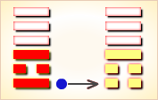
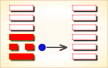
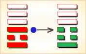
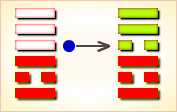
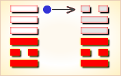

周易第13卦_同人卦(天火同人)_乾上离下
如有疑问互相交流，微信：470283584
周易第13卦详解
同人卦原文
同人。同人于野，亨。利涉大川，利君子贞。
象曰：天与火，同人；君子以类族辨物。
白话文解释
同人卦：聚众于郊外，将行大事，吉利。有利于涉水渡河，有利于君子的卜问。
《象辞》说：同人之卦，上卦为乾为天为君王，下卦为离为火为臣民，上乾下离象征君王上情下达，臣民下情上达，君臣意志和同，这是同人的卦象。君子观此卦象，取法于火，明烛天地，照亮幽隐，从而去分析物类，辨明情状。
《断易天机》解
同人卦乾上离下，为离宫归魂卦。同人卦象征交结情深，两人契义，同心断金。主所求皆得，事事称心。
北宋易学家邵雍解
人类相亲，与人和同；所求皆得，无不称心。
得此卦者，吉祥如意，与人合作共事更佳，上下同心，谋事有成。
台湾国学大儒傅佩荣解
时运：朋友支持，升迁顺利。
财运：合资有利，可以进取。
家宅：合家欢喜。
身体：燥热之症，另求良医。
传统解卦
这个卦是异卦（下离上乾）相叠，乾为天，为君；离为火，为臣民百姓，上天下火，火性上升，同于天，上下和同，同舟共济，人际关系和谐，天下大同。
大象：二人同心，其利断金，君子正心诚意，与人和同之象。
运势：如意吉祥，与人共事，上下皆和，又得长辈提拔。
事业：顺利、平安，尤其是在与他人的合作方面会十分成功，宜广泛开展人际活动，建立广泛的联系，克服狭隘的门户之见，照顾各方面的利益，求大同，存小异，坚持正确的原则，必能成就大事业。
经商：以真诚合作、精诚团结的态度与同行共事，公平竞争，必可获得自己应得的利益。
求名：自己必须刻苦努力，尤其要取得师长和志同道合的朋友指教、帮助，自己虚心进取，完全能够达到目的。
婚恋：多情、善交际，认识的异性朋友多，故需慎重选择，注意维护双方关系和家庭和睦。
决策：性格开朗、乐观，为人热情，人际关系好，社交能力强，要善于同他人合作，尤其要协调多方面的关系，要有原则性，与不良风气斗争，有魄力，敢作敢为，富有自我奉献精神，并具有统御能力，适于担任一定的负责。
台湾张铭仁解卦
同人：表示有志一同，相和而成。主吉象。理念相同共处愉快。事业投资、感情皆是和睦融洽。最适合找人合伙事业或寻求认同自己理念的吉卦。
解释：结合志同道合的人集思广益。
特性：喜团体生活户外活动，有领导才能，善交际，人际关系佳。有幽默感。
运势：得此卦为诸事开通、平安、吉祥、如意之象，有同情心，互爱、亨通之象，故宜好好掌握时机，维持盛泰。若有稍涉偏私或为私情之爱则有破兆，应以事业为重。
家运：上下和乐，运势亨通，可得意外之财，宜把握良机，努力求取。
疾病：病轻，不久可愈，注意心脏，头肺等疾。
胎孕：无碍。与六亲和睦，得缘之吉卦。
子女：上下皆能和睦之象。
周转：顺利，并可进取大业，利也。
买卖：利益大，与人共事吉。
等人：一定会来，且会带来好消息。
寻人：此人非故意出走，自己会回来。
失物：遗失似文件眼镜等物，可能被压在底层，尽快找寻，则可取回。
外出：很平安、顺利，并可以结交新朋友，获得帮助。
考试：成绩优良。
诉讼：凡事以和为贵。
求事：吉利。
改行：吉利亨通。
开业：吉利亨通。
周易第13卦初九爻详解
初九爻辞
初九。同人于门，无咎。
象曰：出门同人，又谁咎也。
白话文解释
初九：聚集大众于王门，将行大事，没有灾祸。
《象辞》说：君王走出王门与国人打成一片，谁又会遭受灾祸呢？
北宋易学家邵雍解
平：得此爻者，能与人合伙经营获利，或出家远行，或修造门户，或在他处学习。做官的或会受到重用，或有升迁之机。
台湾国学大儒傅佩荣解
时运：眼前平顺，外出经营。
财运：不宜开店，可以行商。
家宅：家人和睦。
身体：避地调养，可以无碍。
初九变卦

初九爻动变得周易第33卦：天山遁。这个卦是异卦（下艮上乾）相叠。乾为天，艮为山。天下有山，山高天退。阴长阳消，小人得势，君子退隐，明哲保身，伺机救天下。
周易第13卦六二爻详解
六二爻辞
六二。同人于宗，吝。
象曰：同人于宗，吝道也。
白话文解释
六二：聚同族于宗庙，卜祷凶吉，因为面临艰难。
《象辞》说：仅仅聚同族于宗庙，这是狭隘的宗法原则。
北宋易学家邵雍解
凶：得此爻者，事多不定，与宗人朋友多不和，相互多猜忌，面和心不合，容易起是非。做官的没有升迁之机，需耐心等待。
台湾国学大儒傅佩荣解
时运：相忌者多，未能顺遂。
财运：大宗买卖，留心出纳。
家宅：长子之力，勤俭起家。
身体：魂归宗庙，未可多言。
六二变卦

六二爻动变得周易第1卦：乾为天。这个卦是同卦（下乾上乾）相叠。象征天，喻龙（德才的君子），又象征纯粹的阳和健，表明兴盛强健。乾卦是根据万物变通的道理，以“元、亨、利、贞”为卦辞，表示吉祥如意，教导人遵守天道的德行。
周易第13卦九三爻详解
九三爻辞
九三。伏戎于莽，升其高陵，三岁不兴。
象曰：伏戎于莽，敌刚也，三岁不兴，安行也。
白话文解释
九三：将军队隐蔽在深山密林，并且占领了制高点，但长时期不能取胜。
《象辞》说：将军队隐蔽在深山密林，因为敌人太强大。长时期不能取胜，怎能有所作为呢？
北宋易学家邵雍解
凶：得此爻者，或有丧亲，或有诉讼打官司之患。做官的须防被免职之忧。
台湾国学大儒傅佩荣解
时运：潜心三年，再谋其事。
财运：可开山林，三年获利。
家宅：须防盗贼。
身体：不良于行。
九三变卦

九三爻动变得周易第25卦：天雷无妄。这个卦是异卦（下震上乾）相叠。乾为天为刚为健；震为雷为刚为动。动而健，刚阳盛，人心振奋，必有所得，但唯循纯正，不可妄行。无妄必有获，必可致福。
周易第13卦九四爻详解
九四爻辞
九四。乘其墉，弗克攻，吉。
象曰：乘其墉，义弗克也，其吉，则困而反则也。
白话文解释
九四：爬上了敌人的城墙，城还没有攻下来，继续攻打才能获胜。
《象辞》说：爬上了敌人的城墙，从道义上讲应该停士攻城。之所以继续攻打为吉利，因为困守之敌可能逞其狡诈。
北宋易学家邵雍解
平：得此爻者，亲友之间会互相猜忌，荣中有辱，结果会好些，凡事须多加提防则可吉祥。做官的若能兢兢业业，则有提拔之机遇，或会受到表彰。
台湾国学大儒傅佩荣解
时运：退守不动，反而吉祥。
财运：守货不售，将可获利。
家宅：修缮房屋围墙。
身体：虽有凶险，终究无害。
九四变卦

九四爻动变得周易第37卦：风火家人。这个卦是异卦（下离上巽）相叠。离为火；巽为风。火使热气上升，成为风。一切事物皆应以内在为本，然后伸延到外。发生于内，形成于外。喻先治家而后治天下，家道正，天下安乐。
周易第13卦九五爻详解
九五爻辞
九五。同人，先号啕而后笑，大师克相遇。
象曰：同人之先，以中直也。大师相遇，言相克也。
白话文解释
九五：聚集起来的大众先哭嚎后欢笑，因为大军及时增援，大获胜仗。
《象辞》说：聚集起来的大众之所以先哭后笑（战斗转败为胜），因为筮遇此爻，九五居上卦之中位，像人得贞正之道，势必化凶为吉。大军会师，是说我军压倒了敌人。
北宋易学家邵雍解
平：得此爻者，先难后易，是非不一。做官的会先贬后升。
台湾国学大儒傅佩荣解
时运：辛苦有成，得偿心愿。
财运：小有挫折，终有大利。
家宅：不必惊惶，终于平安。
身体：先危后安。
九五变卦

九五爻动变得周易第30卦：离为火。这个卦是同卦（下离上离）相叠。离者丽也，附着之意，一阴附丽，上下二阳，该卦象征火，内空外明。离为火、为明，太阳反复升落，运行不息，柔顺为心。
周易第13卦上九爻详解
上九爻辞
上九。同人于郊，无悔。
象曰：同人于郊，志未得也。
白话文解释
上九：聚众于郊外，致祭于神灵祝贺胜利，自然没有悔咎。
《象辞》说：聚众于郊外，援助不广，尚不得行其志。
北宋易学家邵雍解
平：得此爻者，宜守常，不宜激进。做官的则多有出差的机会。
台湾国学大儒傅佩荣解
时运：闲散之地，诸事无碍。
财运：郊外立业，暂时无利。
家宅：平顺无灾。
身体：恐无生机。
上九变卦

上九爻动变得周易第49卦：泽火革。这个卦是异卦（下离上兑）相叠。离为火、兑为泽，泽内有水。水在上而下浇，火在下而上升。火旺水干，水大火熄。二者相生亦相克，必然出现变革。变革是宇宙的基本规律。